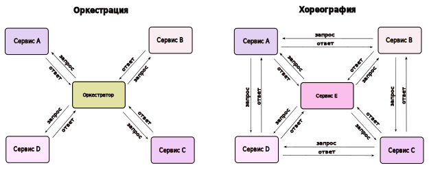

N-уровневая архитектура делит приложение на логические уровни и физические уровни. Слои — это способ разделения обязанностей и управления зависимостями. Каждый слой имеет определенную ответственность. Более высокий уровень может использовать сервисы более низкого уровня, но не наоборот.
Уровни физически разделены и работают на разных машинах. Уровень может вызывать другой уровень напрямую или использовать асинхронный обмен сообщениями. Хотя каждый слой может размещаться на своем собственном уровне, это не обязательно. Несколько слоев могут размещаться на одном уровне. Физическое разделение уровней улучшает масштабируемость и отказоустойчивость, а также увеличивает задержку из-за дополнительной сетевой связи.
N-уровневая архитектура может быть двух типов:
Архитектура с закрытыми уровнями ограничивает зависимости между уровнями. Однако это может создать ненужный сетевой трафик, если один уровень просто передает запросы следующему уровню.
Давайте рассмотрим несколько примеров архитектуры N-Tier.
Трехуровневый широко используется и состоит из следующих различных слоев:
В этой архитектуре уровень представления работает на клиенте и взаимодействует с хранилищем данных. Между клиентом и сервером нет уровня бизнес-логики или непосредственного уровня.
Одноуровневая или одноуровневая архитектура - самый простой способ, так как он эквивалентен запуску приложения на персональном компьютере. Все необходимые компоненты для запуска приложения находятся в одном приложении или сервере.
Вот некоторые преимущества использования N-уровневой архитектуры:
Ниже приведены некоторые недостатки N-уровневой архитектуры:
Хореография — это как хореограф, устанавливающий все правила. Затем в соответствии с ними взаимодействуют танцоры на сцене (микросервисы). Хореография сервиса описывает этот обмен сообщениями и правила, по которым взаимодействуют микросервисы.
Основные принципы:Оркестровка другая. Оркестровщик действует как центр власти. Он отвечает за вызов и объединение сервисов. Он описывает взаимодействие между всеми участвующими службами. Это подобно дирижеру, ведущему музыкантов в музыкальной симфонии. Шаблон оркестровки также включает управление транзакциями между различными службами.
Основные принципы:На приведенной ниже диаграмме показано взаимодействие микросервисов.

Преимущества оркестровки:Реальный пример использования оркестратора: Netflix Conductor.
Circuit breaker (Прерыватель цепи) — это шаблон проектирования, используемый для обнаружения сбоев и инкапсулирующий логику предотвращения постоянного повторения сбоя во время обслуживания, временного внешнего сбоя системы или непредвиденных проблем системы.
Основная идея автоматического выключателя очень проста. Мы заключаем вызов защищенной функции в объект прерывателя цепи, который отслеживает сбои. Как только сбои достигают определенного порога, автоматический выключатель срабатывает, и все дальнейшие вызовы автоматического выключателя возвращаются с ошибкой, при этом защищенный вызов вообще не выполняется. Обычно нам также нужно какое-то оповещение монитора, если срабатывает автоматический выключатель.
Для программных систем характерно совершать удаленные вызовы к программному обеспечению, работающему в разных процессах, возможно, на разных машинах в сети. Одно из больших различий между вызовами в памяти и удаленными вызовами заключается в том, что удаленные вызовы могут завершаться сбоем или зависать без ответа до тех пор, пока не будет достигнуто некоторое время ожидания. Что еще хуже, если у нас есть много звонков от не отвечающего поставщика, тогда у нас могут закончиться критически важные ресурсы, что приведет к каскадным сбоям в нескольких системах.
Давайте обсудим состояния автоматического выключателя:
Когда все нормально, автоматические выключатели остаются замкнутыми, и все запросы проходят к службам в обычном режиме. Если количество отказов превышает пороговое значение, автоматический выключатель срабатывает и переходит в разомкнутое состояние.
В этом состоянии прерыватель цепи немедленно возвращает ошибку, даже не вызывая службы. Автоматические выключатели переходят в полуоткрытое состояние по истечении определенного времени ожидания. Обычно у него будет система мониторинга, в которой будет указан тайм-аут.
В этом состоянии прерыватель цепи пропускает ограниченное количество запросов от службы и вызывает операцию. Если запросы успешны, автоматический выключатель перейдет в замкнутое состояние. Однако, если запросы продолжают отказывать, он возвращается в открытое состояние.
Ограничение скорости (Rate Limiting) относится к предотвращению превышения частоты операции заданного предела. В крупномасштабных системах ограничение скорости обычно используется для защиты базовых служб и ресурсов. Ограничение скорости обычно используется в качестве защитного механизма в распределенных системах, чтобы общие ресурсы могли поддерживать доступность. Он также защищает наши API от непреднамеренного или злонамеренного чрезмерного использования, ограничивая количество запросов, которые могут быть получены от нашего API за определенный период времени.
Ограничение скорости — очень важная часть любой крупномасштабной системы, и его можно использовать для достижения следующих целей:
Существуют различные алгоритмы ограничения скорости API, каждый из которых имеет свои преимущества и недостатки. Давайте кратко обсудим некоторые из этих алгоритмов:
Leaky Bucket — это алгоритм, обеспечивающий простой и интуитивно понятный подход к ограничению скорости с помощью очереди. При регистрации запроса система добавляет его в конец очереди. Обработка первого элемента в очереди происходит через регулярные промежутки времени или в порядке поступления (FIFO). Если очередь заполнена, то дополнительные запросы отбрасываются (или просачиваются).
Здесь мы используем концепцию bucket. Когда приходит запрос, токен из корзины должен быть взят и обработан. Запрос будет отклонен, если в корзине нет доступных токенов, и инициатору запроса придется повторить попытку позже. В результате корзина токенов обновляется через определенный период времени.
Система использует размер окна n секунд для отслеживания скорости алгоритма
фиксированного окна. Каждый входящий запрос увеличивает счетчик окна. Он отбрасывает запрос, если
счетчик превышает пороговое значение.
Ограничение скорости скользящего журнала включает в себя отслеживание журнала с отметкой времени для каждого запроса. Система хранит эти журналы в отсортированном по времени хеш-наборе или таблице. Он также отбрасывает журналы с отметками времени, превышающими пороговое значение. Когда приходит новый запрос, мы вычисляем сумму журналов, чтобы определить скорость запроса. Если запрос превышает пороговую скорость, то он удерживается.
Скользящее окно — это гибридный подход, который сочетает в себе низкую стоимость обработки алгоритма фиксированного окна и улучшенные граничные условия скользящего журнала. Как и в алгоритме фиксированного окна, мы отслеживаем счетчик для каждого фиксированного окна. Затем мы учитываем взвешенное значение частоты запросов предыдущего окна на основе текущей метки времени, чтобы сгладить всплески трафика.
Ограничение скорости становится сложным, когда задействованы распределенные системы. Две основные проблемы, связанные с ограничением скорости в распределенных системах:
При использовании кластера из нескольких узлов нам может потребоваться применить глобальную политику ограничения скорости. Потому что, если бы каждый узел отслеживал свой предел скорости, потребитель мог бы превысить глобальный предел скорости при отправке запросов на разные узлы. Чем больше количество узлов, тем больше вероятность того, что пользователь превысит глобальный лимит.
Самый простой способ решить эту проблему — использовать липкие сеансы в наших балансировщиках нагрузки, чтобы каждый потребитель отправлялся ровно на один узел, но это приводит к отсутствию отказоустойчивости и проблемам масштабирования. Другой подход может заключаться в использовании централизованного хранилища данных, такого как Redis, но это увеличит задержку и вызовет состояние гонки.
Эта проблема возникает, когда мы используем наивный подход «получить-затем-установить»_, в котором мы извлекаем текущий счетчик ограничения скорости, увеличиваем его, а затем отправляем обратно в хранилище данных. Проблема этой модели заключается в том, что за время, необходимое для выполнения полного цикла чтения-приращения-сохранения, могут поступать дополнительные запросы, каждый из которых пытается сохранить счетчик приращения с недопустимым (более низким) значением счетчика. Это позволяет потребителю отправлять очень большое количество запросов, чтобы обойти элементы управления ограничением скорости.
Один из способов избежать этой проблемы — использовать некий механизм распределенной блокировки вокруг ключа, предотвращающий доступ любых других процессов к счетчику или запись в него. Хотя блокировка станет существенным узким местом и плохо масштабируется. Лучшим подходом могло бы быть использование подхода «set-then-get», позволяющего нам быстро увеличивать и проверять значения счетчика, не позволяя атомарным операциям мешать.
Обнаружение служб (Service Discovery) — это обнаружение служб в компьютерной сети. Протокол обнаружения служб (SDP) — это сетевой стандарт, который выполняет обнаружение сетей путем идентификации ресурсов.
В монолитном приложении службы вызывают друг друга посредством методов языкового уровня или вызовов процедур. Однако современные приложения на основе микрослужб обычно работают в виртуализированных или контейнерных средах, где количество экземпляров службы и их расположение динамически меняются. Следовательно, нам нужен механизм, который позволяет клиентам службы делать з апросы к динамически изменяющемуся набору эфемерных экземпляров службы.
Существует два основных шаблона обнаружения служб:
В этом подходе клиент получает местоположение другой службы, запрашивая реестр служб, который отвечает за управление и хранение сетевых расположений всех служб.
В этом подходе мы используем промежуточный компонент, такой как балансировщик нагрузки. Клиент отправляет запрос службе через балансировщик нагрузки, который затем перенаправляет запрос доступному экземпляру службы.
Реестр служб — это, по сути, база данных, содержащая сетевые местоположения экземпляров служб, к которым могут обращаться клиенты. Реестр услуг должен быть высокодоступным и актуальным.
Нам также нужен способ получения служебной информации, часто известный как регистрация службы. Рассмотрим два возможных подхода к регистрации службы:
При использовании модели самостоятельной регистрации экземпляр службы отвечает за регистрацию и отмену своей регистрации в реестре служб. Кроме того, при необходимости экземпляр службы отправляет запросы пульса, чтобы сохранить свою регистрацию.
Реестр отслеживает изменения в запущенных экземплярах, опрашивая среду развертывания или подписываясь на события. Когда он обнаруживает новый доступный экземпляр службы, он записывает его в свою базу данных. Реестр служб также отменяет регистрацию прекращенных экземпляров служб.
Связь между службами необходима в распределенном приложении, но маршрутизация этой связи как внутри, так и между кластерами приложений становится все более сложной по мере роста числа служб. Сетка служб обеспечивает управляемую, наблюдаемую и безопасную связь между отдельными службами. Он работает с протоколом обнаружения служб для обнаружения служб. Istio и envoy являются одними из наиболее часто используемых технологий сервисной сетки.
Вот некоторые часто используемые инструменты инфраструктуры обнаружения сервисов:
Аварийное восстановление (DR) — это процесс восстановления доступа и функциональности инфраструктуры после таких событий, как стихийное бедствие, кибератака или даже перебои в работе.
Аварийное восстановление основано на репликации данных и компьютерной обработки в удаленном расположении, не затронутом аварией. Когда серверы выходят из строя из-за аварии, бизнесу необходимо восстановить потерянные данные из второго места, где данные резервируются. В идеале организация может также перенести свою компьютерную обработку в это удаленное место, чтобы продолжить работу.
_ Аварийное восстановление часто не обсуждается активно во время собеседований по проектированию системы, но важно иметь некоторое базовое представление об этой теме. Вы можете узнать больше об аварийном восстановлении из AWS Well-Architected Framework._
Аварийное восстановление может иметь следующие преимущества:
Давайте обсудим некоторые важные термины, относящиеся к аварийному восстановлению:
Целевое время восстановления (RTO) — это максимально допустимая задержка между прерыванием обслуживания и восстановлением обслуживания. Это определяет, какое временное окно считается приемлемым, когда услуга недоступна.
Целевая точка восстановления (RPO) — это максимально допустимое время, прошедшее с момента последней точки восстановления данных. Это определяет, что считается приемлемой потерей данных между последней точкой восстановления и прерыванием обслуживания.
Различные стратегии аварийного восстановления (DR) могут быть частью плана аварийного восстановления.
Это самый простой тип аварийного восстановления, который включает хранение данных вне офиса или на съемном диске.
В этом типе аварийного восстановления организация устанавливает базовую инфраструктуру на втором сайте.
Горячий сайт постоянно поддерживает актуальные копии данных. Горячие сайты требуют много времени для настройки и стоят дороже, чем холодные сайты, но они значительно сокращают время простоя.